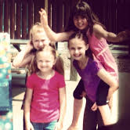
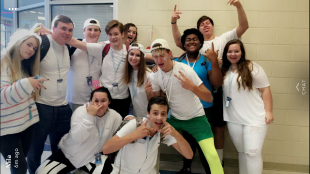
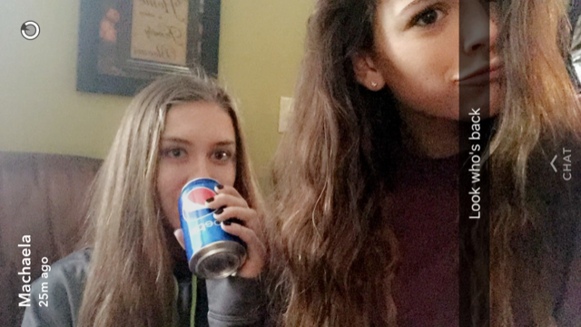

Gabby was born in Syracuse, New York on February 23, 2001 and lived there until she was 14 years old. She moved to Greenville because her dad had the option to move anywhere in the country, and chose here based on a recommendation. Gabby went to St. Margaret’s Elementary (pre-k3 - 6), then Bishop Grimes JR/SR Prep for 7th and 8th grade. She played varsity tennis at both Bishop Grimes and Mann. Mann is the first public school that she has been to.
Gabby’s family consists of her dad, mom, older brother Jordon, younger brother Ashton, and a cat and dog. She has played tennis since she was in 3rd grade, and is still playing today. She has been playing on varsity since 7th grade. Gabby is currently a junior in high school, her brother Ashton is a sophomore, and her brother Jordon is working in New York. We visit New York often throughout the year to visit family and friends.
For her, visiting New York is a good and bad thing. It is mostly a good thing because she gets to see her family and friends. It is only a bad thing when she has to leave because there will be a long period of time before they'll be able to see them again. Everytime Gabby goes to New York, she stays at her friend Machaela’s house because that is like her second family. She will walk into her house and just wait for them to come home and surprise them. It honestly is the best feeling in the world for her.
 After college, Gabby has no idea what she wants to do as a career, but she is considering doing something with psychology. She is looking to go to college somewhere in SC, or she might wait a year and move back to New York and go to college there. Gabby is indecisive and is a type of person who likes to live in the moment, so she won’t officially know until her senior year. She wants to stay close to her family, but she also wants to be a good distance away so she can prove her independence. Gabby is a very realistic person, especially when it comes to money, so she isn’t expecting to be rich, but is expecting to be successful.